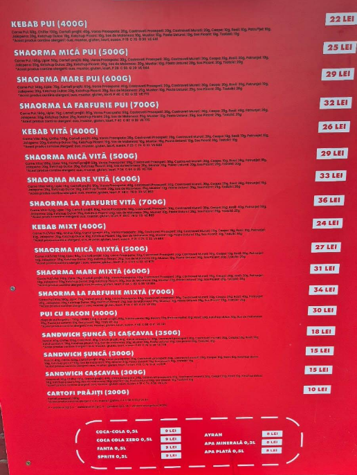
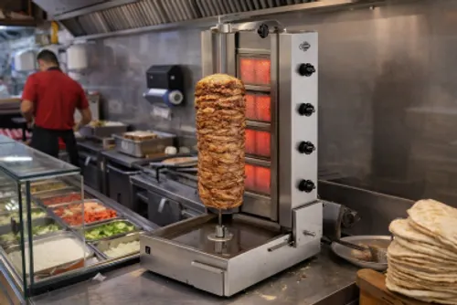
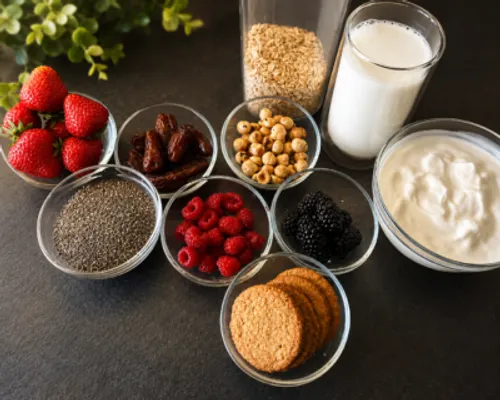
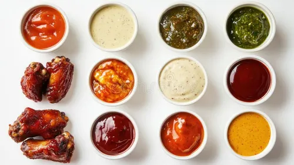

Robo-
Șaorma
Acasă
Meniu
Despre
Galerie
Contact
Galerie
Câteva imagini din local și din meniu
Șaorma Pui
Wrap Veggie
Locația noastră

Meniu Complet

Carne gătită perfect

Legume proaspete zilnic
Cartofi aurii și crocanți

Sosuri făcute în casă
Băuturi răcoritoare